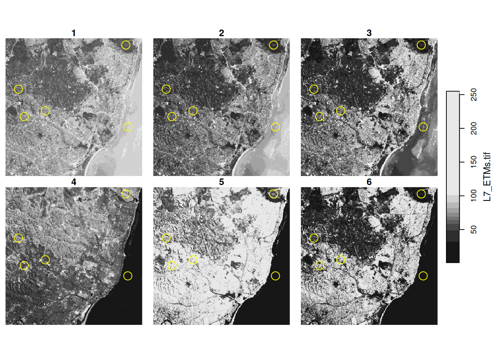
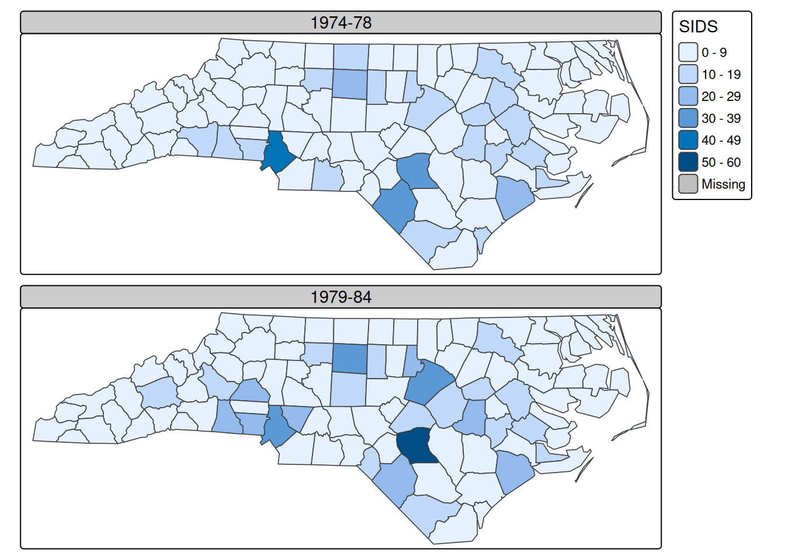
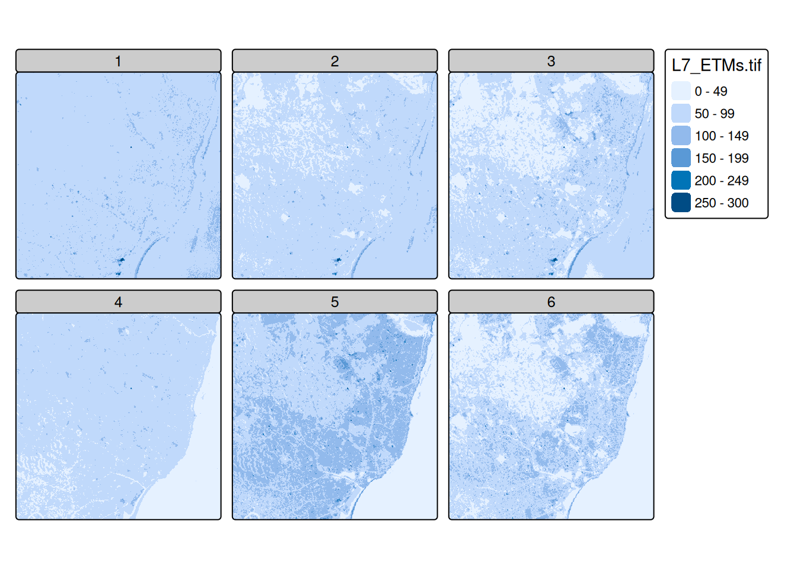

library(sf)
library(rnaturalearth)
w <- ne_countries(scale = "medium", returnclass = "sf")
suppressWarnings(st_crs(w) <- st_crs('OGC:CRS84'))
layout(matrix(1:2, 1, 2), c(2,1))
par(mar = rep(0, 4))
plot(st_geometry(w))
# sphere:
library(s2)
g <- as_s2_geography(TRUE) # Earth
co <- s2_data_countries()
oc <- s2_difference(g, s2_union_agg(co)) # oceans
b <- s2_buffer_cells(as_s2_geography("POINT(-30 -10)"), 9800000) # visible half
i <- s2_intersection(b, oc) # visible ocean
co <- s2_intersection(b, co)
plot(st_transform(st_as_sfc(i), "+proj=ortho +lat_0=-10 +lon_0=-30"), col = 'lightblue')
plot(st_transform(st_as_sfc(co), "+proj=ortho +lat_0=-10 +lon_0=-30"), col = NA, add = TRUE)8 Plotting spatial data
Together with timelines, maps belong to the most powerful graphs, perhaps because we can immediately relate to where we are, or once have been, on the space of the plot. Two recent books on visualisation (Healy 2018; Wilke 2019) contain chapters on visualising geospatial data or maps. Here, we will not try to point out which maps are good and which are bad, but rather a number of possibilities for creating them, challenges along the way, and possible ways to mitigate them.
8.1 Every plot is a projection
The world is round, but plotting devices are flat. As mentioned in Section 2.2.2, any time we visualise, in any way, the world on a flat device, we project: we convert ellipsoidal coordinates into Cartesian coordinates. This includes the cases where we think we “do nothing” as in Figure 8.1 (left), or where we show the world “as it is”, as one would see it from space (Figure 8.1, right).
The left plot of Figure 8.1 was obtained by
library(sf)
library(rnaturalearth)
w <- ne_countries(scale = "medium", returnclass = "sf")
plot(st_geometry(w))indicating that this is the default projection for global data with ellipsoidal coordinates:
st_is_longlat(w)
# [1] TRUEThe projection taken in Figure 8.1 (left) is the equirectangular (or equidistant cylindrical) projection, which maps longitude and latitude linearly to the \(x\)- and \(y\)-axis, keeping an aspect ratio of 1. If we would do this for smaller areas not on the equator, then it would make sense to choose a plot ratio such that one distance unit E-W equals one distance unit N-S at the centre of the plotted area, and this is the default behaviour of the plot method for unprojected sf or stars datasets, as well as the default for ggplot2::geom_sf (Section 8.4).
We can also carry out this projection before plotting. Say we want to plot Germany, then after loading the (rough) country outline, we use st_transform to project:
DE <- st_geometry(ne_countries(country = "germany",
returnclass = "sf"))
DE |> st_transform("+proj=eqc +lat_ts=51.14 +lon_0=90w") ->
DE.eqcHere, eqc refers to the “equidistant cylindrical” projection of PROJ. The projection parameter here is lat_ts, the latitude of true scale, where one length unit N-S equals one length unit E-W. This was chosen at the middle of the bounding box latitudes
We plot both maps in Figure 8.2, and they look identical up to the values along the axes: degrees for ellipsoidal (left) and metres for projected (Cartesian, right) coordinates.
Code
What is a good projection for my data?
There is unfortunately no silver bullet here. Projections that maintain all distances do not exist; only globes do. The most used projections try to preserve:
- areas (equal area)
- directions (conformal, such as Mercator)
- some properties of distances (equirectangular preserves distances along meridians, azimuthal equidistant preserves distances to a central point)
or some compromise of these. Parameters of projections decide what is shown in the centre of a map and what is shown on the fringes, which areas are up and which are down, and which areas are most enlarged. All these choices are in the end political decisions.
It is often entertaining and at times educational to play around with the different projections and understand their consequences. When the primary purpose of the map however is not to entertain or educate projection varieties, it may be preferable to choose a well-known or less surprising projection and move the discussion which projection to use to a decision process of its own. For global maps however, in almost all cases, equal area projections are preferred over plate carrée or web Mercator projections.
8.2 Plotting points, lines, polygons, grid cells
Since maps are just a special form of plots of statistical data, the usual rules hold. Frequently occurring challenges include:
- polygons may be very small, and vanish when plotted
- depending on the data, polygons for different features may well overlap, and be visible only partially; using transparent fill colours may help identify them
- when points are plotted with symbols, they may easily overlap and be hidden; density maps (Chapter 11) may be more helpful
- lines may be hard to read when coloured and may overlap regardless the line width
Colours
When plotting polygons filled with colours, one has the choice to plot polygon boundaries or to suppress these. If polygon boundaries draw too much attention, an alternative is to colour them in a grey tone, or another colour that does not interfere with the fill colours. When suppressing boundaries entirely, polygons with (nearly) identical colours will no longer be visually distinguishable. If the property indicating the fill colour is constant over the region, such as land cover type, then this is not a problem, but if the property is an aggregation then the region over which it was aggregated gets lost, and by that the proper interpretation. Especially for extensive variables, such as the amount of people living in a polygon, this strongly misleads. But even with polygon boundaries, using filled polygons for extensive variables may not be a good idea because the map colours conflate amount and area size.
The use of continuous colour scales that have no noticeable colour breaks for continuously varying variables may look attractive, but is often more fancy than useful:
- it is impracticable to match a colour on the map with a legend value
- colour ramps often stretch non-linearly over the value range, making it hard to convey magnitude
Only for cases where the identification of values is less important than the continuity of the map, such as the colouring of a high resolution digital terrain model, it does serve its goal. Good colours scales and palettes are found in functions hcl.colors or palette.colors, and in packages RColorBrewer (Neuwirth 2022), viridis (Garnier 2021), or colorspace (Ihaka et al. 2023; Zeileis et al. 2020).
Colour breaks: classInt
When plotting continuous geometry attributes using a limited set of colours (or symbols), classes need to be made from the data. R package classInt (Bivand 2022) provides a number of methods to do so. The default method is “quantile”:
library(classInt)
# set.seed(1) if needed ?
r <- rnorm(100)
(cI <- classIntervals(r))
# style: quantile
# one of 1.49e+10 possible partitions of this variable into 8 classes
# [-2.57,-1.28) [-1.28,-0.827) [-0.827,-0.375) [-0.375,-0.126)
# 13 12 13 12
# [-0.126,0.277) [0.277,0.644) [0.644,1.34) [1.34,1.98]
# 12 13 12 13
cI$brks
# [1] -2.573 -1.280 -0.827 -0.375 -0.126 0.277 0.644 1.337 1.978it takes argument n for the number of intervals, and a style that can be one of “fixed”, “sd”, “equal”, “pretty”, “quantile”, “kmeans”, “hclust”, “bclust”, “fisher” or “jenks”. Style “pretty” may not obey n; if n is missing, nclass.Sturges is used; two other methods are available for choosing n automatically. If the number of observations is greater than 3000, a 10% sample is used to create the breaks for “fisher” and “jenks”.
Graticule and other navigation aids
A graticule is a network of lines on a map that follow constant latitude or longitude. Figure 1.1 shows a graticule drawn in grey, on Figure 1.2 it is white. Graticules are often drawn in maps to give place reference. In our first map in Figure 1.1 we can read that the area plotted is near 35\(^o\) North and 80\(^o\) West. Had we plotted the lines in the projected coordinate system, they would have been straight and their actual numbers would not have been very informative, apart from giving an interpretation of size or distances when the unit is known, and familiar to the map reader. Graticules also shed light on which projection was used: equirectangular or Mercator projections have straight vertical and horizontal lines, conic projections have straight but diverging meridians, and equal area projections may have curved meridians.
On Figure 8.1 and most other maps the real navigation aid comes from geographical features like the state outline, country outlines, coast lines, rivers, roads, railways and so on. If these are added sparsely and sufficiently, a graticule can as well be omitted. In such cases, maps look good without axes, tics, and labels, leaving up a lot of plotting space to be filled with actual map data.
8.3 Base plot
The plot method for sf and stars objects try to make quick, useful, exploratory plots; for higher quality plots and more configurability, alternatives with more control and/or better defaults are offered for instance by packages ggplot2 (Wickham et al. 2022), tmap (Tennekes 2022, 2018), or mapsf (Giraud 2022).
By default, the plot method tries to plot “all” it is given. This means that:
- given a geometry only (
sfc), the geometry is plotted, without colours - given a geometry and an attribute, the geometry is coloured according to the values of the attribute, using a qualitative colour scale for
factororlogicalattributes and a continuous scale otherwise, and a colour key is added - given multiple attributes, multiple maps are plotted, each with a colour scale but a key is by default omitted, as colour assignment is done on a per sub-map basis
- for
starsobjects with multiple attributes, only the first attribute is plotted; for three-dimensional raster cubes, all slices over the third dimension are plotted as sub-plots
Adding to plots with legends
The plot methods for stars and sf objects may show a colour key on one of the sides (Figure 1.1). To do this with base::plot, the plot region is split in two and two plots are created: one with the map, and one with the legend. By default, the plot function resets the graphics device (using layout(matrix(1)) so that subsequent plots are not hindered by the device being split in two, but this prevents adding graphic elements subsequently. To add to an existing plot with a colour legend, the device reset needs to be prevented by using reset = FALSE in the plot command, and using add = TRUE in subsequent calls to plot. An example is
library(sf)
nc <- read_sf(system.file("gpkg/nc.gpkg", package = "sf"))
plot(nc["BIR74"], reset = FALSE, key.pos = 4)
plot(st_buffer(nc[1,1], units::set_units(10, km)), col = 'NA',
border = 'red', lwd = 2, add = TRUE)
which is shown in Figure 8.3. Annotating stars plots can be done in the same way when a single stars layer is shown. Annotating stars facet plots with multiple cube slices can be done by adding a “hook” function that will be called on every slice shown, as in
library(stars)
# Loading required package: abind
system.file("tif/L7_ETMs.tif", package = "stars") |>
read_stars() -> r
st_bbox(r) |> st_as_sfc() |> st_sample(5) |>
st_buffer(300) -> circ
hook <- function() {
plot(circ, col = NA, border = 'yellow', add = TRUE)
}
plot(r, hook = hook, key.pos = 4)

and as shown in Figure 8.4. Hook functions have access to facet parameters, facet label and bounding box.
Base plot methods have access to the resolution of the screen device, and hence the base plot method for stars and stars_proxy object will downsample dense rasters and only plot pixels at a density that makes sense for the device available.
Projections in base plots
The base plot method plots data with ellipsoidal coordinates using the equirectangular projection, using a latitude parameter equal to the middle latitude of the data bounding box (Figure 8.2). To control this parameter, either a projection to another equirectangular can be applied before plotting, or the parameter asp can be set to override: asp=1 would lead to plate carrée (Figure 8.1) left. Subsequent plots need to be in the same coordinate reference system in order to make sense with over-plotting; this is not being checked.
Colours and colour breaks
In base plots, argument nbreaks can be used to set the number of colour breaks and argument breaks either to the numeric vector with actual breaks, or to a style value for the style argument in classInt::classIntervals.
8.4 Maps with ggplot2
Package ggplot2 (Wickham et al. 2022; Wickham 2016) can create more complex and nicer looking graphs; it has a geometry geom_sf that was developed in conjunction with the development of sf and helps creating beautiful maps. An introduction to this is found in Moreno and Basille (2018). A first example is shown in Figure 1.2. The code used for this plot is:
library(tidyverse) |> suppressPackageStartupMessages()
nc.32119 <- st_transform(nc, 32119)
year_labels <-
c("SID74" = "1974 - 1978", "SID79" = "1979 - 1984")
nc.32119 |> select(SID74, SID79) |>
pivot_longer(starts_with("SID")) -> nc_longerggplot() + geom_sf(data = nc_longer, aes(fill = value), linewidth = 0.4) +
facet_wrap(~ name, ncol = 1,
labeller = labeller(name = year_labels)) +
scale_y_continuous(breaks = 34:36) +
scale_fill_gradientn(colours = sf.colors(20)) +
theme(panel.grid.major = element_line(colour = "white"))where we see that two attributes had to be stacked (pivot_longer) before plotting them as facets: this is the idea behind “tidy” data, and the pivot_longer method for sf objects automatically stacks the geometry column too.
Because ggplot2 creates graphics objects before plotting them, it can control the coordinate reference system of all elements involved, and will transform or convert all subsequent objects to the coordinate reference system of the first. It will also draw a graticule for the (default) thin white lines on a grey background, and uses a datum (by default: WGS84) for this. geom_sf can be combined with other geoms, for instance to allow for annotating plots.
For package stars, a geom_stars has, at the moment of writing this, rather limited scope: it uses geom_sf for map layout and vector data cubes, and adds geom_raster for regular rasters and geom_rect for rectilinear rasters. It downsamples if the user specifies a downsampling rate, but has no access to the screen dimensions to automatically choose a downsampling rate. This may be just enough, for instance Figure 8.5 is created by the following commands:
library(ggplot2)
library(stars)
r <- read_stars(system.file("tif/L7_ETMs.tif", package = "stars"))
ggplot() + geom_stars(data = r) +
facet_wrap(~band) + coord_equal() +
theme_void() +
scale_x_discrete(expand = c(0,0)) +
scale_y_discrete(expand = c(0,0)) +
scale_fill_viridis_c()
ggplot2 and geom_stars
More elaborate ggplot2-based plots with stars objects may be obtained using package ggspatial (Dunnington 2022). Non-compatible but nevertheless ggplot2-style plots can be created with tmap, a package dedicated to creating high quality maps (Section 8.5).
When combining several feature sets with varying coordinate reference systems, using geom_sf, all sets are transformed to the reference system of the first set. To further control the “base” coordinate reference system, coord_sf can be used. This allows for instance working in a projected system, while combining graphics elements that are not sf objects but regular data.frames with ellipsoidal coordinates associated to WGS84.
A twitter thread by Claus Wilke illustrating this is found here.
8.5 Maps with tmap
Package tmap (Tennekes 2022, 2018) takes a fresh look at plotting spatial data in R. It resembles ggplot2 in the sense that it composes graphics objects before printing by building on the grid package, and by concatenating map elements with a + between them, but otherwise it is entirely independent from, and incompatible with, ggplot2. It has a number of options that allow for highly professional looking maps, and many defaults have been carefully chosen. Creating a map with two similar attributes can be done using tm_polygons with two attributes, we can use
library(tmap)
system.file("gpkg/nc.gpkg", package = "sf") |>
read_sf() |> st_transform('EPSG:32119') -> nc.32119
tm_shape(nc.32119) +
tm_polygons(c("SID74", "SID79"), title = "SIDS") +
tm_layout(legend.outside = TRUE,
panel.labels = c("1974-78", "1979-84")) +
tm_facets(free.scales=FALSE)to create Figure 8.6:
Code
library(tmap)
# Breaking News: tmap 3.x is retiring. Please test v4, e.g. with
# remotes::install_github('r-tmap/tmap')
system.file("gpkg/nc.gpkg", package = "sf") |>
read_sf() |>
st_transform('EPSG:32119') -> nc.32119
tm_shape(nc.32119) + tm_polygons(c("SID74", "SID79"), title="SIDS") +
tm_layout(legend.outside=TRUE, panel.labels=c("1974-78", "1979-84")) +
tm_facets(free.scales=FALSE)

tm_polygons() with two attribute names
Alternatively, from the long table form obtained by pivot_longer one could use + tm_polygons("SID") + tm_facets(by = "name").
Package tmap also has support for stars objects, an example created with

is shown in Figure 8.7. More examples of the use of tmap are given in Chapters 14-16.
8.6 Interactive maps: leaflet, mapview, tmap
Interactive maps as shown in Figure 1.3 can be created with R packages leaflet, mapview, or tmap. Package mapview adds a number of capabilities to leaflet including a map legend, configurable pop-up windows when clicking features, support for raster data, and scalable maps with very large feature sets using the FlatGeobuf file format, as well as facet maps that react synchronously to zoom and pan actions. Package tmap has the option that after giving
tmap_mode("view")all usual tmap commands are applied to an interactive html/leaflet widget, whereas after
tmap_mode("plot")again all output is sent to R’s own (static) graphics device.
8.7 Exercises
- For the countries Indonesia and Canada, create individual plots using equirectangular, orthographic, and Lambert equal area projections, while choosing projection parameters sensible for the area.
- Recreate the plot in Figure 8.3 with ggplot2 and with tmap.
- Recreate the plot in Figure 8.7 using the
viridiscolour ramp. - View the interactive plot in Figure 8.7 using the “view” (interactive) mode of
tmap, and explore which interactions are possible; also explore adding+ tm_facets(as.layers=TRUE)and try switching layers on and off. Try also setting a transparency value to 0.5.